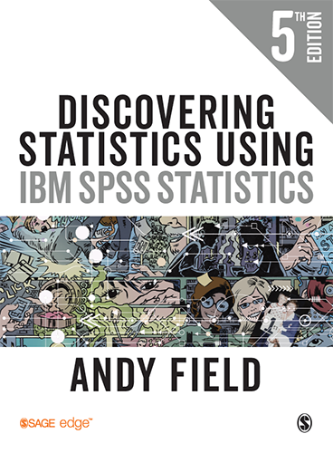
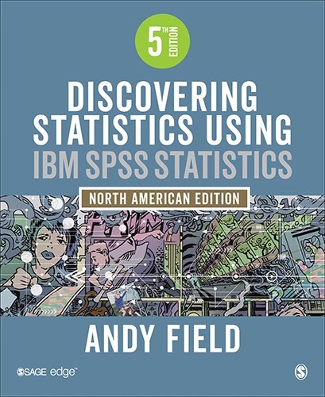

The fifth edition of Discovering Statistics Using IBM SPSS Statistics has just landed (or so I am told). For those that use the book I thought it might be helpful to run through what’s changed.
General changes
It might sound odd if you’ve never done a new edition of a textbook, but it can be quite hard to quantify (or remember) what you have changed. I know I spent a ridiculous number of hours working on it, so I must have changed a lot, but when I list the tangibles it seems uninspiring. Here’s an exercise for you. Take something you wrote 5 years ago and re-write it. The chances are the content won’t change but you’ll express yourself better and it’ll take you a bit of time to do the re-writing. The piece will have improved (hopefully), but the content is probably quite similar. The improvement lies in some crack of intangibility. Anyway, assuming you did the exercise (which of course no-one in their right mind would), multiply that effort by 1000/(number of pages you just re-wrote) and that’s what I spent early 2017 doing.
So, the first major change is that I did a lot of re-structuring and re-writing that doesn’t change the content, as such, but I believe does improve the experience of reading my drivel. It’s a bit less drivel-y, you might say. With respect to the tangibles (I’ve plagiarised myself from the preface here …):
- IBM SPSS compliance: This edition was written using version 25 of IBM SPSS Statistics. IBM releases new editions of SPSS Statistics more often than I bring out new editions of this book, so, depending on when you buy the book, it may not reflect the latest version. I
- New! Chapter: In the past four years the open science movement has gained a lot of momentum. Chapter 3 is new and discusses issues relevant to this movement such as p-hacking, HARKing, researcher degrees of freedom, and pre-registration of research. It also has an introduction to Bayesian statistics.
- New! Bayes: Statistical times are a-changing, and it’s more common than it was four years ago to encounter Bayesian methods in social science research. IBM SPSS Statistics doesn’t really do Bayesian estimation, but you can implement Bayes factors. Several chapters now include sections that show how to obtain and interpret Bayes factors. Chapter 3 also explains what a Bayes factor is.
- New! Robust methods: Statistical times are a-changing … oh, hang on, I just said that. Although IBM SPSS Statistics does bootstrap (if you have the premium version), there are a bunch of statistics based on trimmed data that are available in R. I have included several sections on robust tests and syntax to do them (using the R plugin).
- New! Pointless fiction: Having got quite into writing a statistics textbook in the form of a fictional narrative (An Adventure in Statistics) I staved off boredom by fleshing out Brian and Jane’s story (which goes with the diagrammatic summaries at the end of each chapter). Of course, it is utterly pointless, but maybe someone will enjoy the break from the stats.
- New! Misconceptions: Since the last edition my cat of 20 years died, so I needed to give him a more spiritual role. He has become the Correcting Cat, and he needed a foil, so I created the Misconception Mutt, who has a lot of common misconceptions about statistics. So, the mutt (based on my cocker spaniel, who since I wrote the update has unexpectedly died leaving a gaping emotional vacuum in my life) gets stuff wrong and the cat appears from the spiritual ether to correct him. All of which is an overly elaborate way to point out some common misconceptions.
- New-ish! The linear model theme: In the past couple of editions of this book I’ve been keen to scaffold the content on the linear model to focus on the commonalities between models traditionally labelled as regression, ANOVA, ANCOVA, t-tests, etc. I’ve always been mindful of trying not to alienate teachers who are used to the historical labels, but I have again cranked the general linear model theme up a level.
- New-ish! Characters: I loved working with James Iles on An Adventure in Statistics so much that I worked with him to create new versions of the characters in the book (and other design features like their boxes). They look awesome. Given that I was overhauling the characters, I decided Smart Alex should be a woman this time around.
- Obvious stuff: I’ve re-created all of the figures, and obviously updated the SPSS Statistics screenshots and output.
- Feedback-related changes: I always collate feedback from readers and instructors and feed that into new editions. Lots of little things will have changed resulting from user-feedback. One obvious example, is with the examples in the book. I tweaked quite a few examples this time around (Smart Alex and within the main book). It’s hard to remember everything, but most tweaks were aimed at trying to avoid lazy stereotypes: for example, I changed a lot of examples based on sex differences, I changed a suicide example etc. The style of the book hasn’t changed (the people who like it will still like it, and the people who don’t still won’t) but sometimes an example that seemed like a good idea in 2005 doesn’t seem so great in 2017.
Chapter-by-chapter changes
Every chapter got a thorough re-write, but here are the tangible changes:
- Chapter 1 (Doing research): I re-wrote and expanded the discussion of hypotheses. I changed my beachy head example to be about memes and how they follow normal distributions. I used some google analytics data to illustrate this.
- Chapter 2 (Statistical theory): I restructured this chapter around the acronym of SPINE (thanks to a colleague, Jennifer Mankin, for distracting me from the acronym that more immediately sprang to my childish mind), so you’ll notice that subheadings/structure has changed and so on. The content is all there, just rewritten and reorganized into a better narrative. I expanded my description of null hypothesis significance testing (NHST).
- Chapter 3 (Current thinking in statistics): This chapter is completely new. It co-opts some of the critique of NHST that used to be in Chapter 2 but moves this into a discussion of open science, p-hacking, HARKing, researcher degrees of freedom, pre-registration, and ultimately Bayesian statistics (primarily Bayes factors).
- Chapter 4 (IBM SPSS Statistics): Obviously reflects changes to SPSS Statistics since the previous edition. There’s a new section on ‘extending’ SPSS Statistics that covers installing the PROCESS tool, the Essentials for R plugin and installing the WRS2 package (for robust tests).
- Chapter 5 (Graphs): No substantial changes other than reflecting the new layout and output from the chart editor. I tweaked a few examples.
- Chapter 6 (Assumptions): The content is more or less as it was. I have a much stronger steer away from tests of normality and homogeneity (I still cover them but mainly as a way of telling people not to use them) because I now offer some robust alternatives to common tests.
- Chapter 7 (Nonparametric models): No substantial changes to content.
- Chapter 8 (Correlation): I completely rewrote the section on partial correlations.
- Chapter 9 (The linear model): I restructured this chapter a bit and wrote new sections on robust regression and Bayesian regression.
- Chapter 10 (t-tests): I did an overhaul of the theory section to tie it in more with the linear model theme. I wrote new sections on robust and Bayesian tests of two means.
- Chapter 11 (Mediation and moderation): No substantial changes to content, just better written.
- Chapters 12–13 (GLM 1–2): I changed the main example to be about puppy therapy. I thought that the Viagra example was a bit dated, and I needed an excuse to get some photos of my spaniel into the book. (I might have avoided doing this had I know the crappy hand that fate would subsequently deal my beloved hound, but he’s in there just to make it super hard for me to look at those chapters and teach from them.). I wrote new sections on robust and Bayesian (Chapter 12 only) variants of these models.
- Chapter 14 (GLM 3): I tweaked the example – it’s still about the beer-goggles effect, but I linked it to some real research so that the findings now reflect some actual science that’s been done (and it’s not about sex differences any more). I added sections on robust and Bayesian variants of models for factorial designs.
- Chapters 15–16 (GLM 4–5): I added some theory to Chapter 14 to link it more closely to the linear model (and to the content of Chapter 21). I give a clearer steer now to ignoring Mauchly’s test and routinely applying a correction to F (although, if you happen to like Mauchly’s test, I doubt that the change is dramatic enough to upset you). I added sections on robust variants of models for repeated-measures designs. I added some stuff on pivoting trays in tables. I tweaked the example in Chapter 16 a bit so that it doesn’t compare males and females but instead links to some real research on dating strategies.
- Chapter 17 (MANOVA), Chapter 18 (Factor analysis), Chapter 19 (Categorical data), Chapter 20 (Logistic regression), Chapter 21 (Multilevel models): Just rewritten, structural tweaks and so on but no major content changes.
International editions
Nothing to do with me, but this time around if you live in North America you’ll get a book like this:

In the rest of the world it’ll look like this:

The basic difference is in the page size and formatting. The North American edition has wider pages and a three column layout, the standard edition doesn’t. The content is exactly the same (I say this confidently despite the fact that I haven’t actually seen the proofs for the North American edition so I have no idea whether the publishers changed my UK spellings to US spellings or edited out anything they secretly wished I hadn’t put in the book.)
So there you have it. Needless to say I hope that those using the book think that things have got better …
Citation
@online{field2017,
author = {Field, Andy},
title = {DSUS5 Has Arrived!},
date = {2017-11-17},
url = {https://profandyfield.com/posts/2017_11_17_dsus5/},
langid = {en}
}